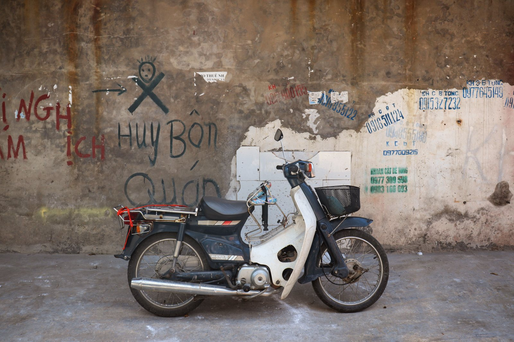
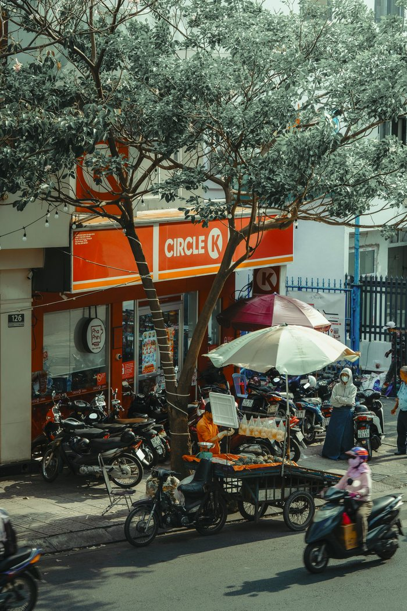
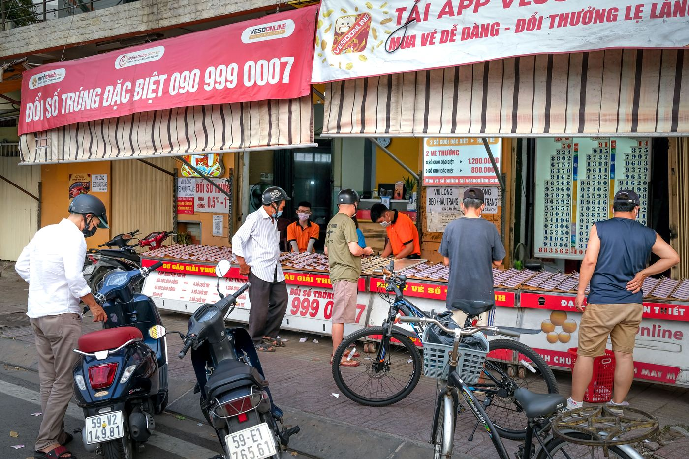

Как продать байк 50сс в Нячанге перед отъездом

Вопрос «а что с ним делать, когда я уеду» люди задают ещё до покупки — и это нормальный вопрос. Байк 50сс не привязывает вас к Вьетнаму навсегда: это техника, которую местные покупают каждый день. Но продаётся она спокойно только тогда, когда документы в порядке, а подготовку вы начали не в последний день перед вылетом.
Сразу честно: обратного выкупа мы не делаем и не обещаем. Мы продаём готовые байки и не выкупаем их назад. Эта статья — о том, как продать байк самому, и она написана ровно для того, чтобы вы понимали механику заранее.
Всё начинается с документов
Главный актив при перепродаже — не внешний вид, а Blue Card (cà vẹt). Покупателю важно увидеть настоящий техпаспорт, где совпадают номер рамы и номер двигателя, указан объём и госномер. Если документ на руках и совпадает с байком, разговор идёт быстро. Если документа нет, «потерян» или данные не совпадают — байк превращается в проблему, которую местные обходят стороной.
Поэтому правило простое: с первого дня владения держите Blue Card в сухом месте, а с собой возите копию или фото. О том, как читать техпаспорт и проверять объём, есть отдельный разбор — как подтвердить настоящие 50 кубов по документам.
За сколько уходит байк
Точную цифру заранее не назовёт никто: вторичная цена зависит от модели, пробега, состояния и, главное, от документов. Реальный ориентир получается только сравнением — посмотрите, за сколько прямо сейчас выставлены похожие байки того же класса и с таким же типом документов. Не тех, что «продано», а именно активные объявления в вашем городе.
Две вещи, которые двигают цену вниз сильнее всего: непонятные документы и следы удара. Две вещи, которые держат её: чистый Blue Card и ощущение, что за байком следили.

Подготовка: три дня, а не три часа
Перед продажей имеет смысл вложить минимум времени и денег — вернётся с запасом:
- мойка — включая пластик под сиденьем и колёсные диски;
- масло, если пробег после последней замены большой: свежее масло — аргумент, который проверяется на слух;
- лампы, стоп-сигнал, поворотники — неработающая лампа читается как «за байком не следили»;
- давление в шинах и осмотр протектора;
- тормоза — если ручка провалилась или колодки визжат, это первое, что заметят на тест-драйве.
Отдельно — фотографии. Снимайте днём, при рассеянном свете, 8–12 кадров: общий вид с двух сторон, приборка с пробегом, сиденье, колёса, замок, и обязательно сам Blue Card (имя и адрес владельца на фото лучше закрыть). Честные фото с мелкими царапинами работают лучше отретушированных: человек приезжает и видит то, что ожидал.
Где искать покупателя
Рабочих каналов немного, и они разные по скорости и цене:
- Вьетнамские доски объявлений (самая массовая — Chợ Tốt). Больше всего покупателей, но переписка на вьетнамском и торг будут жёстче.
- Русскоязычные и англоязычные группы в Facebook и Telegram по Нячанге. Меньше аудитории, зато вас понимают без переводчика, а многие зимовщики ищут именно байк 50сс.
- Магазины и мастерские, которые берут технику. Самый быстрый вариант и самая низкая цена: они покупают с расчётом перепродать.
- Сарафан — соседи, хозяин жилья, знакомые. Часто срабатывает быстрее объявлений.
Начинайте за 2–3 недели до отъезда. За три дня продают только через магазин и только с большой скидкой.

Как проходит передача
Схема, которую во Вьетнаме считают нормой:
- Покупатель осматривает байк и делает короткую поездку.
- Стороны подписывают договор купли-продажи. Местная практика — заверить его у нотариуса; для вьетнамского покупателя это важно, потому что дальше он оформляет перерегистрацию на себя.
- Вы передаёте оригинал Blue Card, ключи (лучше оба) и копию своего паспорта/страницы с визой, если её просят для договора.
- Деньги получаете до передачи документов, а не после.
Перерегистрацию (sang tên) делает новый владелец — это его шаг и его сроки, и брать этот процесс на себя вам не нужно. Мы, кстати, тоже не заявляем перерегистрацию как услугу: продаём байк с чистым Blue Card и папкой байка, дальше документы работают у покупателя.
Чего не делать
- Не отдавать документы «до оплаты» — ни на «покажу жене», ни на «съезжу в банк».
- Не оставлять байк на реализацию незнакомому человеку без письменного документа: формально техника всё ещё ваша.
- Не отпускать на тест-драйв одного с ключами и документами. Паспорт в залог не берите — берите с собой на пассажирское место или оставайтесь с документами.
- Не продавать «как есть» молча, если знаете о поломке: скрытый дефект почти всегда заканчивается требованием вернуть деньги.
Почему это важно и при покупке
Ликвидность байка закладывается в момент, когда вы его берёте. Байк с честным Blue Card на 50cc, без следов серьёзного ремонта и в рабочем состоянии продаётся; «серый» байк без документов не продаётся ни за сколько. Поэтому мы и держим фильтр на закупе: как мы отбираем и готовим байки. Вместе с байком вы получаете документы и папку байка.
Короткий вывод
Продажа байка 50сс в Нячанге — это документы плюс две недели времени. Держите Blue Card в порядке, приведите байк в вид, поставьте честные фото, ищите покупателя параллельно в двух-трёх каналах и передавайте документы только после денег. Дальше полезно прочитать про предпродажную подготовку и чек-лист проверки байка — он одинаково работает и когда вы покупаете, и когда продаёте.